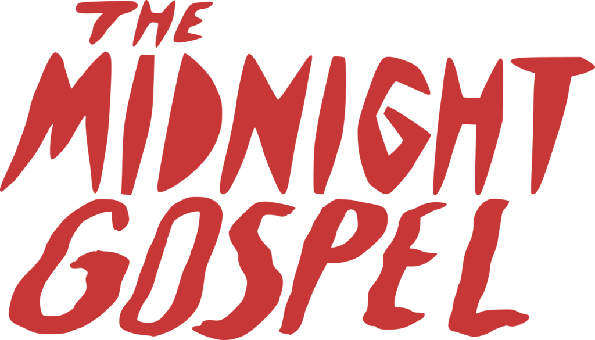

The Midnight Gospel nos presenta a un podcaster espacial llamado Clancy que se vale de un simulador de multiversos que funciona bastante mal para entrevistar a curiosos seres que viven en mundos alternativos moribundos ya sea por la explosión de un apocalipsis zombi o por causa de la mismísima Muerte en persona.
Clancy hace uso de este dispositivo que, por si fuera poco, está insertado en su cabeza, para acceder a distintos multiversos y poder realizar su trabajo hablando con los distintos seres que rodean su mundo, grabando sus conversacioes para ofrecerlas luego a través de su podcast.
Lo primero que hay que señalar es que no se parece a nada que hayas visto antes, aunque haya ciertos aspectos
en la sinopsis que puedan traeros a la cabeza a Rick y Morty.
Sí, aquí también hay viajes cósmicos y
realidades alternativas pero lejos del propósito humorístico hay en The Midnight Gospel otras inquietudes
y un potentísimo sello personal: es una propuesta bastante única en su especie y decididamente transgresora,
sin buscar el bienestar del público si no más bien retándolo a seguir la trama y descifrar sus misterios
ocultos.
En este sentido, hay que señalar como elemento positivo el hecho de que te incentive a indagar y a rascar para sacarle el máximo partido posible. Quizás también a llevártelo todo a tu propio terreno y a recapacitar sobre los grandes temas: la vida, la muerte, el amor o la búsqueda de cierto nivel de comunión con la realidad ya sea por medio de la meditación, el arte o la entrega. Y ojo al guiño a "El anciano de los días" de William Blake y a otras de sus visionarias obras.
